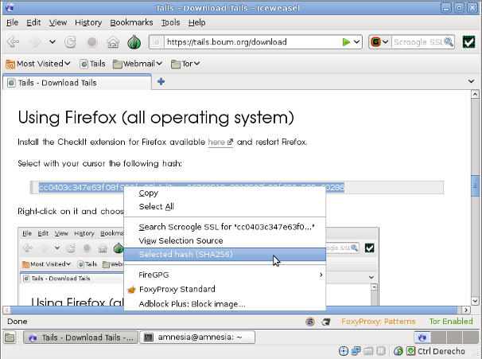
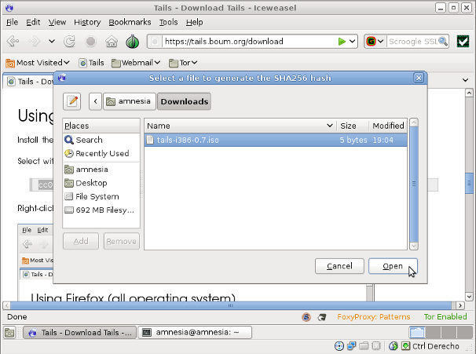
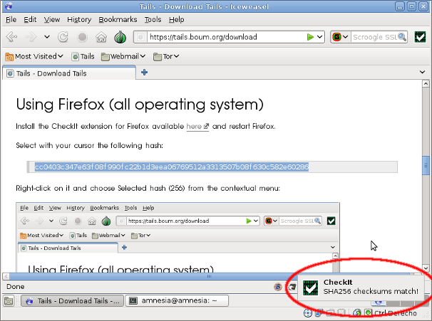

Warning! Please try release candidates for testing purposes but do not rely on these for anything. No guarantee, blablabla.
If you're running a web server, you're most welcome to help us spread Tails by [[setting up a web mirror|contribute/how/mirror]].
[[!map pages="torrents/files/*.torrent"]]
Here are the OpenPGP signatures for the BitTorrent files listed above:
[[!map pages="torrents/files/*.torrent.asc"]]Seeing back the image once you downloaded it is also a nice and easy way of helping spread Tails.
It is important to check the [[!wikipedia Data_integrity desc="integrity"]] of the ISO image you downloaded to make sure that the download went well.
Warning: the following techniques don't provide you with a strong way of checking the ISO image [[!wikipedia Authentication desc="authenticity"]] and making sure you downloaded a genuine Tails.
Those techniques rely on standard HTTPS and [[!wikipedia Certificate_authority desc="certificate authorities"]] to make you trust the content of this website. But, [[as explained on our warning page|doc/warning#index3h1]], you could still be victim of a man-in-the-middle attack while using HTTPS. On this website as much as on any other.
It is anyway a good thing to check the ISO image integrity first. We will propose you after that a more advanced technique to check the authenticity of the ISO image.
Do you want to check the ISO image integrity:
Download the file tails-i386-0.7.iso.sha256 containing the SHA-256 hash in the same directory as the ISO image you downloaded.
Open a terminal and go to the directory of as the ISO image:
cd [your iso image directory]
Then run the following command to check the integrity of the ISO image against the .sha256 file:
sha256sum -c tails*.iso.sha256
If your ISO image is correct you will get something like:
tails-i386-0.7.iso: OK
Install the CheckIt extension for Firefox available here and restart Firefox.
Select with your cursor the following hash:
fd95926c203fc5bff619573c4c040056cdd9b692ecca11e34b4b7bbec5fffe06
Right-click on it and choose "Selected hash (256)" from the contextual menu:

From the dialog box that shows up, open the ISO image:

Wait for the hash to compute. This should take several seconds during which your browser will be unresponsive.
If the ISO is correct you should a message should appear saying "SHA256 checksums match!":

The released images are signed with our [[GnuPG key]]; you can, and should, verify their integrity before using them.
Users of a recent enough GNOME should make sure they have the
seahorse-plugins package installed, then right-click on
the .asc OpenPGP signature file, and open it with the
Others rather need to do this on the command-line, in the directory
where the .iso and .asc files are:
gpg --verify tails*.iso.asc
If you want to be extra cautious and authenticate a Tails ISO image in a stronger way than what standard HTTPS offers you, you will need to use the OpenPGP Web of Trust.
One of the inherent problems of standard HTTPS is that the trust we usually put on a website is defined by certificate authorities: a hierarchical and closed set of companies and governmental institutions approved by web vendors. This model of trust has long been critized and proved several times to be vulnerable to attacks [[as explained on our warning page|doc/warning#index3h2]].
We believe instead that users should be given the final say when trusting a website, and that designation of trust should be done on the basis of human interaction.
The OpenPGP [[!wikipedia Web_of_Trust desc="Web of Trust"]] is a decentralized trust model based on OpenPGP keys. OpenPGP is a standard for data encryption and decryption that provides cryptographic privacy and authentication through the use of key owned by its users.
All Tails ISO image are signed by our OpenPGP key and finding a way of trusting Tails' key could allow you to authenticate better the ISO image you downloaded by verifying this signature. Let's see that with an example.
You're a friend of Alice and really trust her way of managing OpenPGP keys. You're trusting Alice's key.
Furthermore, Alice met Bob, a Tails developper, in a conference, and signed Bob's key. Alice is trusting Bob's key.
Bob is a Tails developper who directly owns the Tails' key. Bob fully trusts Tails' key.
This scenario creates a trust path from you to Tails' key that could allow you to trust Tails' key without having to depend on certicate authorities.
This trust model is not perfect either and requires both caution and intelligent supervision by users. The technical details of creating, managing and trusting OpenPGP keys is outside of the scope of this document.
If you never used OpenPGP before and since the Web of Trust is actually based on human relationships and real-life interactions you will need to start establishing contacts with people knowledgeable about OpenPGP and start building trust relationships in order to find a trust path to Tails' key. You could start by contacting a local [[!wikipedia Linux_User_Group desc="%s"]] or other Tails enthousiasts near you.
For further technical reading you can check:
Every ISO image we ship can be either burn on a CD or installed onto a USB stick.
Burning a CD
For detailed instructions on how to burn an ISO image you can consult the corresponding Ubuntu documentation, just replace the Ubuntu ISO image by the Tails ISO image you downloaded:
Installing onto a USB stick (the content of the USB stick will be lost in the operation)
FIXME: mention Intel-based Mac users sometimes need to upgrade their firmware to get the keyboard working in the syslinux boot menu.
It's very important to keep your Tails version up-to-date, otherwise your system will be vulnerable to numerous security holes. The development team is doing its best to release new versions fixing known security holes on a regular basis.
New versions are announced on:
Refer to our [[security announcements|/security]] feed for more detailed information about the security holes affecting Tails. Furthermore you will be automatically notified of the security holes affecting the version you are using at the startup of a new Tails session.
Since Tails is based on Debian, it takes advantages of the all of the work done by the Debian security team. As quoted from (http://security.debian.org/):
Debian takes security very seriously. We handle all security problems brought to our attention and ensure that they are corrected within a reasonable timeframe. Many advisories are coordinated with other free software vendors and are published the same day a vulnerability is made public and we also have a Security Audit team that reviews the archive looking for new or unfixed security bugs.
Experience has shown that "security through obscurity" does not work. Public disclosure allows for more rapid and better solutions to security problems. In that vein, this page addresses Debian's status with respect to various known security holes, which could potentially affect Debian.
Now that you have a Tails CD or USB stick you can shutdown your computer and start using Tails without altering your existing operating system.
If you're using a CD: Put the Tails CD into the CD/DVD-drive and restart the computer. You should see a welcome screen prompting you to choose your language.
If you don't get this menu, you can consult the Ubuntu documentation about booting from the CD for more information, especially the part on the BIOS settings.
If you're using a USB stick: Shutdown the computer, plug in your USB stick and start the computer. You should see a welcome screen prompting you to choose your language.
If your computer does not automatically do so, you might need to edit the BIOS settings. Restart your computer, and watch for a message telling you which key to press to enter the BIOS setup. It will usually be one of F1, F2, DEL, ESC or F10. Press this key while your computer is booting to edit your BIOS settings. You need to edit the Boot Order. Depending on your computer you should see an entry for 'removable drive' or 'USB media'. Move this to the top of the list to force the computer to attempt to boot from USB before booting from the hard disk. Save your changes and continue.
For more detailed instruction on how to boot from USB you can read About.com: How To Boot your Computer from a Bootable USB Device
If you have problems accessing the BIOS, try to read pendrivelinux.com: How to Access BIOS